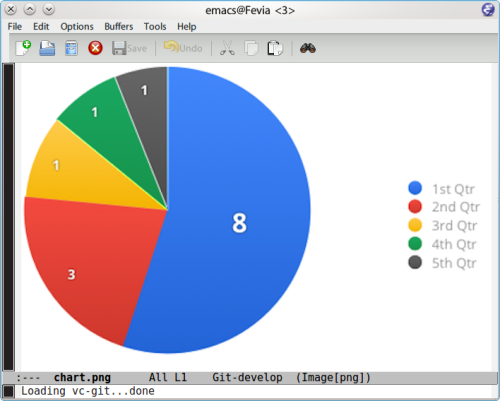
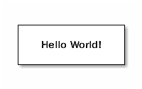
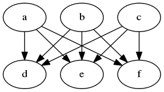
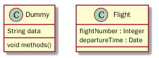

- User id:
coldnew - Use emacs since 2006
- My emacs lisp plugin
- org-ioslide
- pangu-spacing
- ac-octave
- linum-ace
- linum-relative
- qml-mode
- GitHub: http://github.com/coldnew
coldnew
Org Mode
- Organize Your Life In Plain Text!
M - ALT (used to be called Meta)
C - Control
S - Shift
C-x C-s - save document
C-x C-f - open document
Escape Meta Alt Control Shift
You need
24
8.0 ↑
Install org-mode ver 8.0 under emacs24
M-x package-install and enter org
For org-mode version below 8.0
M-x org-version to check your org-mode version.
* 關於 org-mode 介紹 org-mode 的各種用途。 ** 時間管理 如何使用 org-mode 來進行時間管理。 ** 產生文件檔 *** 產生 HTML 檔案 *** 產生 Latex 檔案
| 按鍵 | 用途 |
|---|---|
| M-RET | 插入同一級標題 |
| M-Left/Right | 將當前標題升級/降級 (減少/增加星星) |
| C-* | 將游標所在的那一行變為標題 |
| TAB | 折疊/打開標題和其內容 |
| 列表類型 | 表達符號或方法 |
|---|---|
| 無序列表 | - 、 + 、 * |
| 有序列表 | 1. 或者 1) 開頭 |
| 描述列表 | 使用 :: 將描述內容與項目分開 |
- 這是項目一 :: 項目的定義
- 這是項目二
+ 項目二的子項目一
+ 項目二的子項目二
1. 條列式 1
2. 條列式 2
1) 子項目 1
2) 子項目 2
*粗體* /斜體/ +刪除線+ H_2 O E=mc^2 =等寬字= _下劃線_
*粗體* /斜體/ +刪除線+ H₂O E=mc² =等寬字= _下劃線_
http://www.google.com file:/home/coldnew/test.png news:comp.emacs irc:/irc.com/#emacs mailto:who@email.net file:files/do_mount.sh::5 [[file:files/do_mount.sh][mount the file]]
M-x org-toggle-inline-images 來切換顯示圖片

| 作為表格分隔
TAB 可以再表格內切換
|- 再按下 TAB 可以產生分隔線
| Name | Phone | Age | |-------+-------+-----| | Peter | 1234 | 17 | | Anna | 4321 | 25 |
#+TBLFM: 的位置用 C-c C-c 更新表格
| Student | Maths | Physics | Mean | |----------+-------+---------+------| | Bertrand | 13 | 09 | 11 | | Henri | 15 | 14 | 14.5 | | Arnold | 17 | 13 | 15 | #+TBLFM: $4=vmean($2..$3)
<s TAB 插入程式碼的樣板
C-c ' 編輯程式碼，再使用 C-c C-c 跳回
#+BEGIN_SRC c #include <stdio.h> int main (int argc, char *argv[]) { printf("Hello Org-mode\n"); } #+END_SRC
#+BEGIN_SRC python print ("Hello Org-mode") #+END_SRC
C-c ; to comment out entry
* COMMENT This enty and it's child will not be export ** I will not be exported
# will be taken as comment
# This line is comment in org mode
#+BEGIN_COMMENT ... #+END_COMMENT , content will not be exported
#+BEGIN_COMMENT I will not be exported #+END_COMMENT
C-c C-c 來加上 tag
C-c C-q 加上 tag 標記
* Android :android: * Linux :linux:
| 快捷鍵 | 用途 |
|---|---|
| C-c \ | 查找某個 tag 下的所有項目 |
| C-c / | 查找查找特定的項目 |
* My Secret :secret: 帳號: abcdefghi 密碼: 123456789
* My Secret :secret: -----BEGIN PGP MESSAGE----- Version: GnuPG v1.4.11 (GNU/Linux) jA0EAwMCMHyo+92YAGdgyT6BozrNKie0QDp/STnysilwZC3PtBefc8BBMFxqHlsX mLAoEgnqRyj3GFBfc8H9Bz1/7sLlJv66GhkIasczTQ== =IMdx -----END PGP MESSAGE-----
;; Set default org file to store note (setq org-default-notes-file (concat org-directory "NOTE.org")) ;; Quickly use C-c r to take note (global-set-key (kbd "C-c r") 'org-capture) ;; Setup capture template (setq org-capture-templates '(("t" "TODO" entry (file+headline "" "Tasks") "* TODO %?\n %i\n") ("n" "NOTE" entry (file+headline "" "Tasks") "* NOTE %?\n %i\n %a")))
C-c r 選擇要紀錄的類型
C-c C-c 跳回
TODO and DONEC-c t 切換 TODO 與 DONE 狀態
* Task ** TODO Buy milk ** DONE Join COSCUP 2013 8/3 CLOSED: [2013-08-03 Sat 04:24] ** TODO Join COSCUP 2013 8/4 SCHEDULED: <2013-08-04 Sun>
#+TODO: TODO(t) WAIT(w@/!) | DONE(d!) CANCELED(c@)
S-Up to change priority up
S-Down to change priority down
* Task ** TODO [#A] Join COSCUP 2013 ** TODO [#B] Write paper ** TODO [#C] Write letter to Sam Fortune
[ ] 開頭的列會被認做是複選框
C-c C-c 改變複選框狀態
M-S RET 增加子項目
* TODO Need to do [0/4] - [ ] Buy book - [ ] Buy DVD - [ ] Read book - [ ] Sell book
SCHEDULE and DEADLINEC-c C-s 加入日程規劃
C-c C-d 加入 deadline
* Task ** TODO Buy milk ** DONE Join COSCUP 2013 8/3 CLOSED: [2013-08-03 Sat 04:24] ** TODO Join COSCUP 2013 8/4 SCHEDULED: <2013-08-04 Sun> ** TODO Buy book DEADLINE: <2013-08-04 日>
M-x org-agenda 選擇類型
d daily agenda
w weekly agenda
v m monthly agenday
v y yearly agenda
C-c C-x i to start timer
C-c C-x o to stop timer
C-u C-c C-x i to see current timer
* test timer CLOCK: [2013-08-03 六 14:12]--[2013-08-03 六 14:14] => 0:02 CLOCK: [2013-08-03 六 14:11]--[2013-08-03 六 14:12] => 0:01 CLOCK: [2013-08-03 六 14:10]--[2013-08-03 六 14:11] => 0:01
R to see clock result.
| Name | Exporter location | Worg Tutorial | Org-mode Manual |
|---|---|---|---|
| ASCII | ./lisp/ox-ascii.el | ox-ascii | ASCII/Latin-1/UTF-8 export |
| Beamer | ./lisp/ox-beamer.el | ox-beamer | Beamer class export |
| HTML | ./lisp/ox-html.el | ox-html | HTML export |
| iCalendar | ./lisp/ox-icalandar.el | ox-icalendar | |
| LaTeX | ./lisp/ox-latex.el | ox-latex | LaTeX and PDF export |
| Man | ./lisp/ox-man.el | ox-man | |
| Markdown | ./lisp/ox-md.el | ox-md | |
| ODT | ./lisp/ox-odt.el | ox-odt | OpenDocument Text export |
| Publishing | ./lisp/ox-publish.el | ox-publish | Publishing |
| Texinfo | ./lisp/ox-texinfo.el | ox-texinfo |
| Name | Exporter location | Worg Tutorial | Org-mode Manual |
|---|---|---|---|
| Confluence | ./contrib/lisp/ox-confluence.el | ox-confluence | |
| Deck.js | ./contrib/lisp/ox-deck.el | ox-deck | |
| Freemind | ./contrib/lisp/ox-freemind.el | ox-freemind | Freemind export |
| Groff | ./contrib/lisp/ox-groff.el | ox-groff | |
| Koma Scrlttr2 | ./contrib/lisp/ox-koma-letter.el | ox-koma-letter | |
| RSS | ./contrib/lisp/ox-rss.el | ox-rss | |
| S5 | ./contrib/lisp/ox-s5.el | ox-s5 | |
| Taskjuggler | ./contrib/lisp/ox-taskjuggler.el | ox-taskjugger | Taskjuggler export |
C-c C-e # to insert template
#+TITLE: the title to be shown (default is the buffer name) #+AUTHOR: the author (default taken from user-full-name) #+DATE: a date, an Org timestamp1, or a format string for format-time-string #+EMAIL: his/her email address (default from user-mail-address) #+DESCRIPTION: the page description, e.g., for the XHTML meta tag #+KEYWORDS: the page keywords, e.g., for the XHTML meta tag #+LANGUAGE: language for HTML, e.g., ‘ en ’ (org-export-default-language) #+OPTIONS: H:2 num:t toc:t \n:nil @:t ::t |:t ^:t f:t TeX:t ...
num: turn on/off section-numbers toc: turn on/off table of contents, or set level limit (integer)
C-c C-e m m (org-md-export-to-markdown) 轉換成 md 文件
C-c C-e m M (org-md-export-as-markdown) 顯示換出來的 md 文
件內容
#+OPTIONS: toc:nil * Use org-mode to export Markdown doc ** Howto contents
# Use org-mode to export Markdown doc ## Howto contents
C-c C-e l l (org-latex-export-to-latex) 產生 LaTeX
C-c C-e l L (org-latex-export-as-latex) 顯示 LaTeX
C-c C-e l p (org-latex-export-to-pdf) 產生 PDF
#+LATEX_CLASS: 選擇預先定義好的 LaTeX 樣板
#+LATEX_HEADER: 用來增加額外的 LaTeX 套件
#+LATEX_CLASS: article #+LATEX_CLASS_OPTIONS: [a4paper] #+LATEX_HEADER: \usepackage{xyz}
C-c C-e h h (org-html-export-to-html) 轉換成 HTML 文件
C-c C-e h H (org-html-export-as-html) 顯示換出來的 HTML 文
件內容
#+HTML_HEAD: 用來增加 javascript 或是 css
#+HTML_HEAD: <script src="style/js/less.min.js" type="text/javascript"></script> #+HTML_HEAD: <link rel="stylesheet" media="all" href="theme/css/slide.css" />
#+ATTR_HTML: 可以為 table 或是 src block 增加額外的設置
#+ATTR_HTML: :border 2 :width 20% file:picts.png
(not work on org-mode 8.0)
C-c C-c to evalute source block
#+BEGIN_SRC sh echo "Today is `date +%D`" #+END_SRC #+RESULTS: : Today is 08/02/13
M-x org-babel-tangle to generate the code to file
#+BEGIN_SRC sh :tangle src/today.sh echo "Today is `date +%D`" #+END_SRC
#+BEGIN_SRC ditaa :file picts/hello-world.png +--------------+ | | | Hello World! | | | +--------------+ #+END_SRC #+RESULTS: file:picts/hello-world.png

#+BEGIN_SRC dot :file picts/graphviz-example.png :exports results digraph G{ {a b c} -> {d e f} } #+END_SRC #+RESULTS: file:picts/graphviz-example.png

#+BEGIN_SRC plantuml :file picts/plantuml-example.png class Dummy { String data void methods() } class Flight { flightNumber : Integer departureTime : Date } #+END_SRC

C-c ' to visit the include file at point
#+INCLUDE: "~/.emacs" src emacs-lisp #+INCLUDE: "~/.emacs" :lines "5-10" Include lines 5 to 10, 10 excluded #+INCLUDE: "~/.emacs" :lines "-10" Include lines 1 to 10, 10 excluded #+INCLUDE: "~/.emacs" :lines "10-" Include lines from 10 to EOF
C-x 8 RET 200b RET 插入 <U200B> 字元
出問題的範例
~target="self"~
原始的規則如下
(defcustom org-emphasis-regexp-components '(" \t('\"{" "- \t.,:!?;'\")}\\" " \t\r\n,\"'" "." 1))
修改成如下 (其中的 # 代表剛剛所提及的 <U200B> 字元 )
(setq org-emphasis-regexp-components '(" #\t('\"{" "- \t.,:!?;'\")}\\" " \t\r\n,\"'" "." 1))
綁到 M-space 下
(global-set-key (kbd "M-<SPC>") '(lambda ()(interactive) (insert "\ufeff")))
<Thank you>
{kind=link}
{kind=link}
{kind=link}
{kind=link}